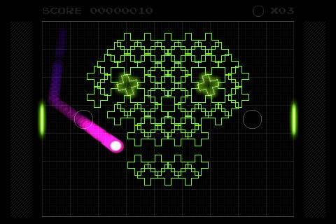
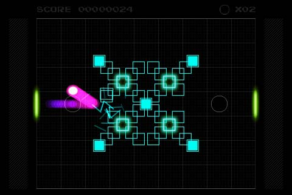
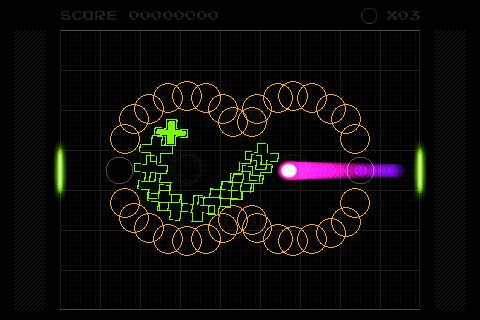

COCOnoid
An adictive game inspired in classic games. COCOnoid is part of the COordinating COde project.
Playing with games of the COCO project you will improve right-left hand coordination.
Destroy all the fractal cores keeping the ball inside the play area.
Playing with COCOnoid you will enjoy of five fractal worlds. Each one with a different characteristics.
Taste again the old school games.


